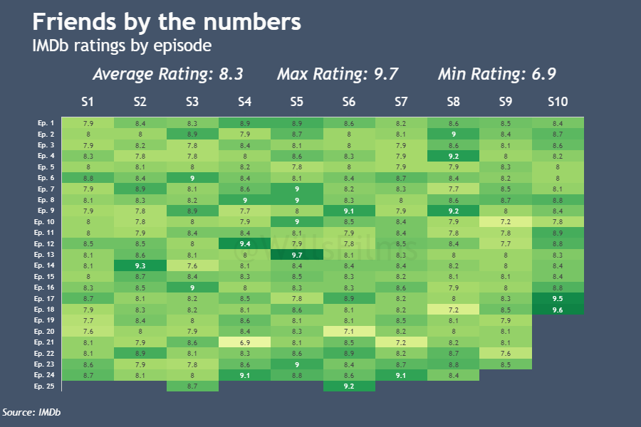
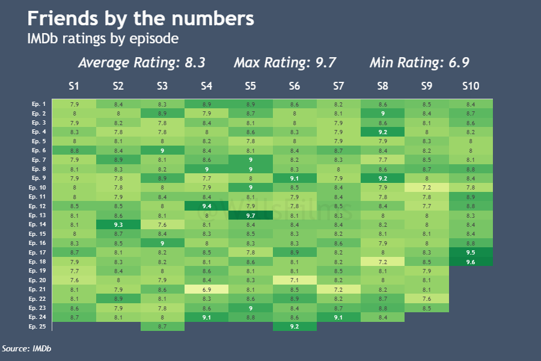

Film & TV Infographics
Browse my collection of data-driven infographics that visualize trends and insights from the world of cinema and television.
TV Series Heatmaps
I have created a Python package that creates a heatmap infographic showing the IMDb ratings for a selected TV series. This package makes use of the Python package plotly.express and the lmplot() method. You can see two examples below I have created for Game of Thrones and Friends, showing the automatic scalability I have programmed in. You can read more about the package, how to use it, and my future plans on my GitHub where you can also fork the code for your own use.
 



Credit is given to IMDb for the original data source.
Film Series Infographics
I also develop infographics showing data regarding film series. These are listed below:
1. Gauge Charts
These infographics are created using the fantastic web data visualisation tool Datawrapper. They take data on the critic scores of films within a film series and plot them in a series of Donut charts.


Credit is given to Rotten Tomatoes for the original data source.
2. [placeholder]
Director Charts
[In development]